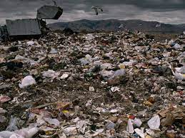
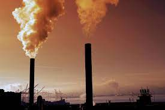
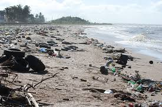

Home
Resources
Past & Present Events
Charities
Login/Registration
Pollution Prevention (P2) Grant Program

$1,100 funded towards Enviroment Cleanup
Air Pollution

Sometimes, air pollution is visible. A person can see dark smoke pour from the exhaust pipes of large trucks or factories, for example. More often, however, air pollution is invisible. Polluted air can be dangerous, even if the pollutants are invisible. It can make people’s eyes burn and make them have difficulty breathing. It can also increase the risk of lung cancer. Sometimes, air pollution kills quickly. In 1984, an accident at a pesticide plant in Bhopal, India, released a deadly gas into the air. At least 8,000 people died within days. Hundreds of thousands more were permanently injured.
Pollution is the introduction of harmful materials into the environment.

These harmful materials are called pollutants. Pollutants can be natural, such as volcanic ash. They can also be created by human activity, such as trash or runoff produced by factories. Pollutants damage the quality of air, water, and land.Many things that are useful to people produce pollution. Cars spew pollutants from their exhaust pipes. Burning coal to create electricity pollutes the air. Industries and homes generate garbage and sewage that can pollute the land and water. Pesticides—chemical poisons used to kill weeds and insects—seep into waterways and harm wildlife.
Croudfunding
address........address................
number...........number
Thank you for visiting